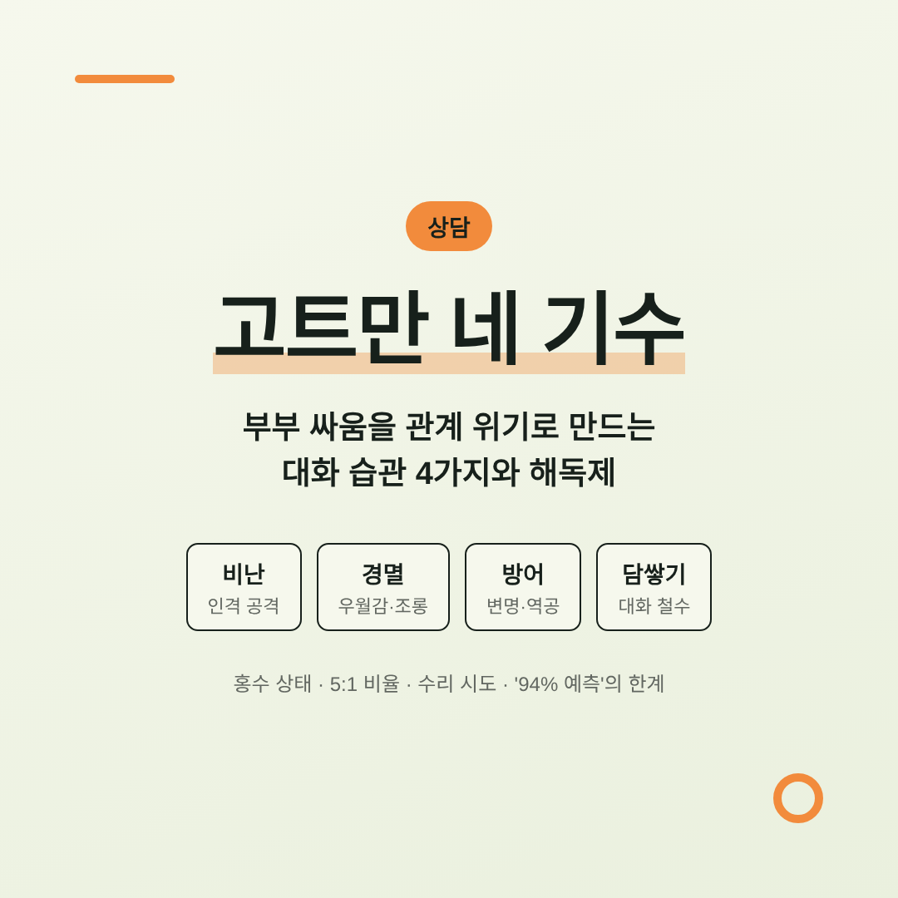
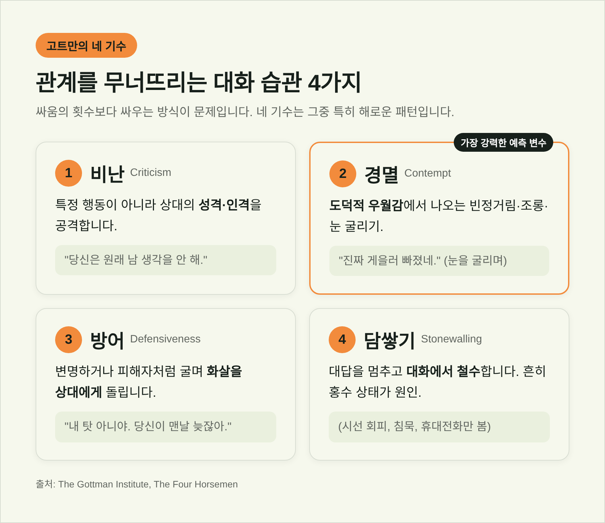
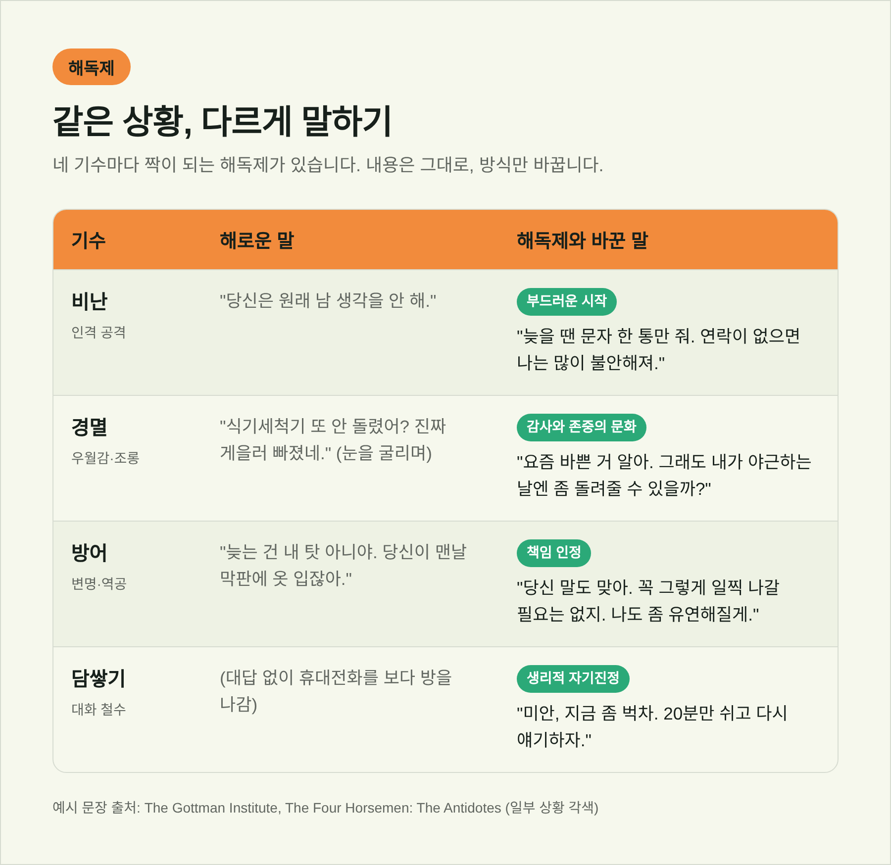
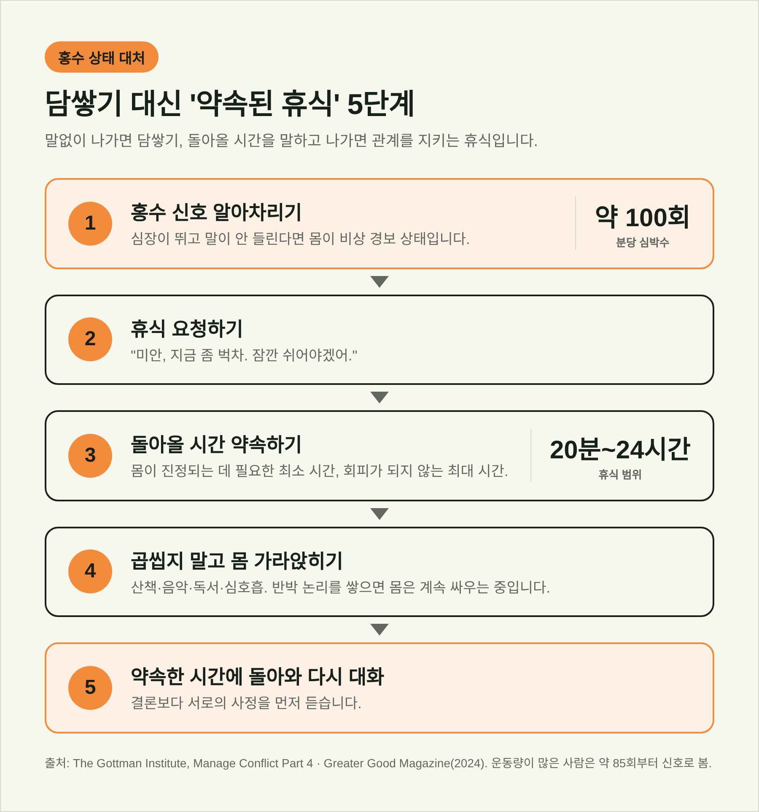
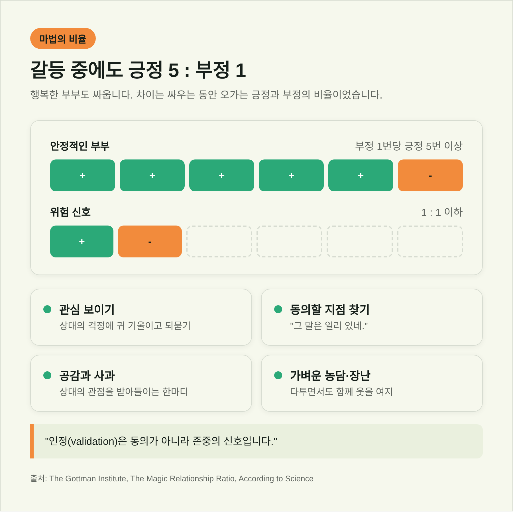
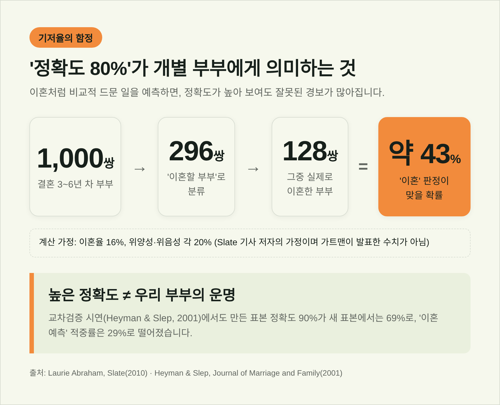
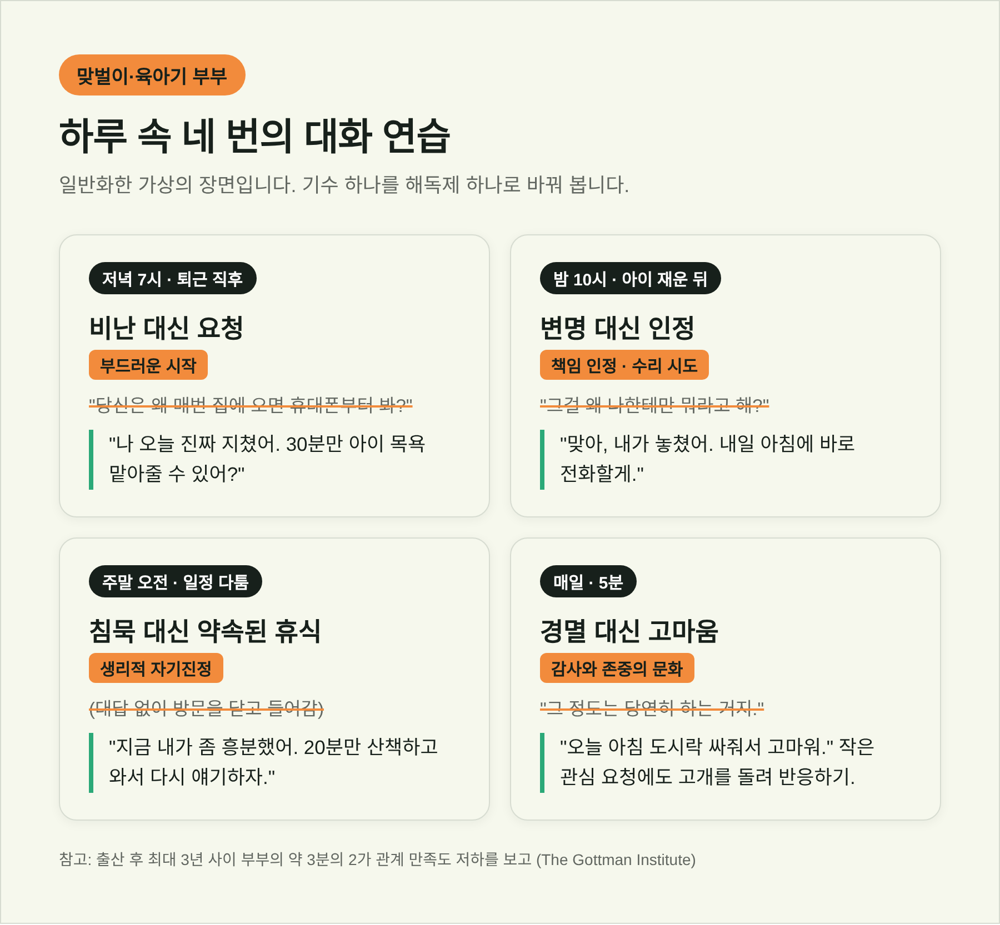

고트만 네 기수, 부부 싸움을 관계 위기로 만드는 대화 습관 4가지와 해독제

이번 글에서는 부부 관계 연구자 존 가트맨(고트만)이 말한 '네 기수(Four Horsemen)'를 정리해 보겠습니다. 비난·경멸·방어·담쌓기가 무엇인지, 각각을 어떻게 풀어내는지, 그리고 널리 알려진 '이혼 예측 94%'가 실제로 어떤 의미인지까지 함께 살펴봅니다.
먼저 세 줄로 요약하면 이렇습니다.
- 싸움의 횟수보다 싸우는 방식이 관계를 가릅니다. 네 기수는 그 방식 중 특히 해로운 네 가지입니다.
- 네 기수에는 각각 해독제가 있습니다. 부드러운 시작, 감사와 존중, 책임 인정, 생리적 자기진정입니다.
- 다만 '몇 분만 보면 이혼을 맞힌다'는 주장은 과장된 면이 있습니다. 진단 도구가 아니라 대화 습관을 돌아보는 거울로 쓰시길 권합니다.
■ 네 기수라는 말은 어디서 왔을까
존 가트맨은 미국 워싱턴대 심리학 명예교수입니다. 1970년대부터 동료 로버트 레븐슨과 함께 부부를 장기간 추적하는 연구를 했습니다.
방식은 단순했습니다. 부부에게 평소 갈등이 되는 주제를 꺼내 15분 안에 해결해 보라고 하고, 그 장면을 영상으로 찍으며 심박수 같은 생리 반응을 함께 쟀습니다. 그리고 몇 년 뒤 이 부부들이 어떻게 되었는지 다시 확인했습니다.
당시로서는 새로운 시도였습니다. 그전까지 부부 연구는 대부분 설문, 즉 본인이 스스로 말한 내용에 기댔습니다. 가트맨은 실제 대화 속 표정·말투·몸짓을 하나하나 부호화했습니다. 그의 연구를 날카롭게 비판한 기자조차 이 관찰 방식은 '혁신적'이었다고 인정했을 정도입니다.
이 관찰에서 반복해서 드러난 해로운 대화 패턴 네 가지에, 그는 요한계시록의 '종말의 네 기수'라는 이름을 붙였습니다. 관계의 끝을 예고하는 신호라는 뜻입니다.

■ 첫 번째 기수, 비난 — 행동이 아니라 사람을 겨눌 때
비난은 불만과 다릅니다. 불만은 특정한 행동을 말합니다. 비난은 상대의 성격과 인격을 공격합니다.
가상의 맞벌이 부부를 예로 들어보겠습니다. 남편이 연락 없이 두 시간 늦게 귀가했습니다.
- 불만: "늦는데 연락이 없어서 걱정했어."
- 비난: "당신은 원래 자기 행동이 남한테 어떤 영향을 주는지 생각을 안 해."
차이는 '원래', '항상', '맨날' 같은 단어에서 자주 드러납니다. 행동 하나가 사람 전체에 대한 판결로 바뀌는 순간입니다.
가트맨 연구팀은 신혼부부 124쌍의 갈등 대화를 분석한 1999년 연구에서, 나중에 이혼한 부부는 대화 첫 3분부터 부정적 감정이 더 많고 긍정적 감정은 적었다고 보고했습니다. 특히 대화의 시작이 구체적 불만이 아니라 상대를 향한 '전면 공격'인 경우가 많았습니다.
해독제는 '부드러운 시작'입니다. 비난 없이 불만을 말하는 방법입니다. '당신은'으로 시작하는 문장을 '나는'으로 바꾸고, 내 감정과 내가 바라는 것을 말합니다.
- "늦을 땐 문자 한 통만 줘. 아무 연락 없으면 나는 많이 불안해져."
말의 내용은 같습니다. 상대가 방어할 틈을 주지 않는다는 점이 다릅니다.
■ 두 번째 기수, 경멸 — 가장 위험한 신호
경멸은 도덕적 우월감의 자리에서 하는 공격입니다. 빈정거림, 냉소, 비꼬는 별명, 눈 굴리기, 비웃음, 조롱 섞인 농담이 모두 여기에 속합니다.
- "식기세척기 또 안 돌렸어? 진짜 게을러 빠졌네." (눈을 굴리며)
- "그걸 지금 말이라고 해?"
고트만 연구소는 경멸을 이혼의 '가장 강력한 단일 예측 변수'라고 부릅니다. 경멸이 오가는 부부일수록 감염성 질환에 더 잘 걸린다는 연구도 함께 소개합니다. 다만 이 부분은 구체적 수치가 공개 자료에 제시되어 있지 않아, 경향 정도로 받아들이는 편이 안전합니다.
경멸이 담긴 말은 내용보다 태도가 먼저 전달됩니다. '나는 너보다 낫다'는 메시지가 상대에게 그대로 꽂힙니다.
해독제는 '감사와 존중의 문화'입니다. 고마움·애정·존중을 정기적으로 표현해, 관계의 기본 온도를 바꾸는 일입니다. 같은 식기세척기 상황도 이렇게 말할 수 있습니다.
- "요즘 바쁜 거 알아. 그래도 내가 야근하는 날엔 식기세척기 좀 돌려줄 수 있을까?"
상대의 사정을 먼저 알아주는 한 문장이 경멸의 반대편에 서 있습니다.
■ 세 번째 기수, 방어 — 변명이 역공이 되는 구조
방어는 공격받았다고 느낄 때 자신을 지키려는 반응입니다. 억울함을 내세우거나, 무고한 피해자처럼 굴거나, 화살을 상대에게 돌립니다. 대개 비난에 대한 반응으로 나옵니다.
- "늦는 건 내 탓 아니야. 당신이 맨날 막판에 옷 입잖아."
- "오늘 진짜 너무 바빴다고."
방어는 자연스러운 반응입니다. 문제는 그 안에 '그러니까 네 잘못'이라는 메시지가 숨어 있다는 점입니다. 상대는 사과를 듣는 대신 반격을 받습니다. 그러면 비난이 더 세집니다.
해독제는 '책임 인정'입니다. 갈등 전체가 아니라 일부만이라도 내 몫을 받아들이면 됩니다.
- "늦는 건 싫지만 당신 말도 맞아. 꼭 그렇게 일찍 나갈 필요는 없지. 나도 좀 유연해질게."
- "내가 깜빡했네. 지금 바로 연락할게."
'내 잘못도 있다'는 한마디가 공격-방어의 고리를 끊습니다.

■ 네 번째 기수, 담쌓기와 '홍수 상태'
담쌓기는 듣는 사람이 대화에서 완전히 빠져나가는 것입니다. 대답을 멈추고, 시선을 피하고, 휴대전화를 보거나 방을 나갑니다. 보통 경멸이 오간 뒤에 따라옵니다.
담쌓기를 '무시'로만 보면 놓치는 것이 있습니다. 가트맨은 그 밑에 홍수 상태(flooding)가 있다고 설명합니다.
홍수 상태는 몸이 비상 경보를 울리는 상태입니다. 아드레날린이 나오고, 심장이 빨라지고, 소화기관으로 가는 혈류가 줄어듭니다. 몸은 싸우거나, 도망치거나, 얼어붙을 준비를 합니다.
고트만 연구소는 갈등 중 심박수가 분당 약 100회에 이르면 사회적 상호작용을 제대로 처리하기 어렵다고 봅니다. 줄리 가트맨은 평소 운동을 많이 하는 사람이라면 85회 안팎부터 신호로 보라고 덧붙였습니다. 이 상태에서는 상대의 말이 들리지 않고, 내 말도 거칠어집니다.
흥미로운 연구가 하나 있습니다. 15분간 다투던 부부를 중간에 멈추게 하고, 30분 동안 갈등 얘기 없이 잡지를 읽게 했습니다. 그 뒤 다시 측정하자 심박수가 눈에 띄게 낮아져 있었다고 합니다. 몸이 가라앉는 데에는 생각보다 시간이 필요하다는 뜻입니다.
해독제는 '생리적 자기진정'입니다. 구체적으로는 이렇게 합니다.
- 신호를 정합니다. "미안, 지금 좀 벅차. 잠깐 쉬어야겠어."
- 돌아올 시간을 약속합니다. 최소 20분, 길어도 24시간 안입니다. 20분은 몸이 진정되는 데 필요한 시간이고, 24시간은 휴식이 회피로 변하지 않게 하는 선입니다.
- 쉬는 동안 다툼을 곱씹지 않습니다. 반박 논리를 쌓으면 몸은 계속 싸우는 중입니다.
- 산책, 음악, 독서, 심호흡처럼 몸을 가라앉히는 일을 합니다.
- 약속한 시간에 돌아와 대화를 다시 시작합니다.
말없이 나가 버리는 것과 "20분 뒤에 다시 얘기하자"고 말하고 나가는 것은 전혀 다릅니다. 앞의 것은 담쌓기이고, 뒤의 것은 관계를 지키는 휴식입니다.

■ 싸움이 있어도 괜찮은 이유, 5:1 비율
가트맨의 연구에서 오래 행복한 부부도 싸웠습니다. 차이는 갈등 중에 오가는 긍정과 부정의 비율이었습니다.
안정적인 부부는 갈등 대화 중에도 부정적 상호작용 하나당 긍정적 상호작용이 다섯 번 이상이었습니다. 비율이 1:1 이하로 떨어지면 위험 신호로 봅니다. 흔히 '마법의 비율'이라고 부르는 5:1입니다.
여기서 긍정은 거창한 것이 아닙니다.
- 상대의 걱정에 관심을 보이는 것
- "그 말은 일리 있네"처럼 동의할 지점을 찾는 것
- 공감하고 사과하는 것
- 가벼운 농담이나 장난
가트맨은 분노 자체는 해롭지 않다고 말합니다. 분노가 비난·경멸·방어와 함께 표현될 때만 해가 된다는 것입니다. 또 상대의 마음을 인정하는 것은 동의가 아니라 존중의 신호라고 강조합니다.
예전에는 '싸우지 않는 부부가 좋은 부부'라고 여겼습니다. 연구가 보여준 그림은 다릅니다. 잘 싸우고, 싸우는 중에도 다정함을 놓지 않는 부부가 오래갑니다.

■ '이혼 예측 94%'는 사실일까
가트맨을 이야기할 때 빠지지 않는 숫자가 있습니다. '15분 대화만 보면 이혼을 94% 맞힌다'는 주장입니다. 이 부분은 차분히 나눠 볼 필요가 있습니다.
연구가 실제로 보여준 것
- 1983~1987년 73쌍을 추적한 연구에서, 대화가 부정적으로 흐르는 부부는 만족도가 낮고 4년 뒤 건강도 더 나빴으며, 별거·이혼을 고려하는 일이 잦았습니다.
- 79쌍을 14년간 추적한 연구에서는 22쌍(28%)이 이혼했습니다. 결혼 7년 안에 헤어진 부부는 공격과 방어가 오가며 격해지는 패턴이, 중년 이후 헤어진 부부는 감정을 누르고 서로 냉담해지는 패턴이 두드러졌습니다.
- 신혼부부 130쌍을 6년간 추적한 1998년 연구에서는 네 기수가 이혼을 일관되게 예측했습니다. 남편이 아내의 의견을 받아들이는지도 중요한 변수였습니다.
94%라는 숫자의 출처
고트만 연구소는 공식 FAQ에서 '94%'라는 숫자가 혼란을 불러왔다고 스스로 밝힙니다. 실제로는 1992년 한 연구에서 93.6% 정확도를 보고한 것이 반올림되어 퍼졌다는 설명입니다. 다른 연구들의 수치는 제각각입니다. 2000년 구술 인터뷰 연구는 4~6년 뒤 이혼을 87%, 7~9년 뒤를 81% 맞혔다고 보고했습니다.
비판의 핵심 — 사후 적합
2010년 미국 매체 슬레이트(Slate)의 기자 로리 에이브러햄은 1998년 연구를 예로 들어 이렇게 지적했습니다. 연구팀은 6년 뒤 누가 이혼했는지 이미 알고 있었습니다. 그 결과를 대화 코딩 자료와 함께 넣어, 이혼한 부부와 아닌 부부를 가장 잘 가르는 공식을 만들었습니다. 이것은 미래를 맞힌 것이 아니라 이미 아는 결과에 공식을 맞춘 것, 즉 사후 적합에 가깝다는 비판입니다. 과학적 '예측'이라면 그 공식을 새로운 부부 집단에 적용해 검증해야 하는데, 그 단계가 없었다는 것입니다.
표본 크기도 문제로 꼽힙니다. 1998년 연구의 예측 분석에 쓰인 부부는 자료에 따라 57쌍 또는 60쌍으로, 전체 130쌍보다 적었습니다. 심리학자 리처드 헤이먼은 2001년 논문에서 이 분석이 양극단 부부를 많이 뽑아 결과가 부풀려질 수 있다고 지적했습니다.
기저율이라는 함정
헤이먼은 또 다른 시연을 했습니다. 전국 표본으로 이혼 예측 모델을 만들자, 만든 표본에서는 정확도가 90%였습니다. 그런데 같은 모델을 처음 보는 표본에 적용하자 정확도는 69%로 떨어졌고, '이혼할 것'이라는 예측이 실제로 맞는 비율은 29%에 그쳤습니다.
에이브러햄도 비슷한 계산을 보여줍니다. 결혼 3~6년 차 이혼율을 16%, 오판율을 20%로 가정하면, 1,000쌍 중 296쌍이 '이혼할 부부'로 분류됩니다. 그런데 실제로 이혼하는 부부는 그중 128쌍뿐입니다. '이혼한다'는 판정이 맞을 확률은 절반에도 못 미치는 셈입니다. 이혼처럼 비교적 드문 일을 예측할 때는 정확도가 높아 보여도 잘못된 경보가 많아질 수밖에 없습니다.

그렇다면 네 기수는 쓸모없을까
그렇지는 않습니다. 고트만 연구소는 7개 이혼 연구 중 6개가 미리 가설을 세운 예측 연구였고, 일부 결과는 다른 대학 연구팀이 반복 확인했다고 반박합니다. 비판자인 에이브러햄도 가트맨의 공헌은 '막대하며', 공식을 만든 것 자체는 예측으로 가는 '필수적인 첫 단계'라고 인정했습니다.
정리하면 이렇습니다. 네 기수가 관계 악화와 함께 나타난다는 관찰은 여러 연구에서 반복됐습니다. 하지만 '몇 분 보고 우리 부부의 미래를 맞힌다'는 식의 해석은 연구가 감당하는 범위를 넘습니다. 네 기수는 판정표가 아니라 지금 우리 대화를 비춰보는 거울에 가깝습니다.
■ 싸움을 되돌리는 기술, 수리 시도
아무리 조심해도 기수는 등장합니다. 그래서 가트맨이 중요하게 본 것이 수리 시도(repair attempts)입니다. 대화가 엇나갈 때 다시 궤도로 돌려놓는 모든 말과 행동을 가리킵니다.
고트만 연구소가 소개하는 수리 문구는 생각보다 소박합니다.
- "그 말 취소해도 될까? 다시 말해볼게."
- "더 부드럽게 말하고 싶은데, 잘 안 되네."
- "내가 잘못했어. 내 몫이 보여."
- "잠깐 쉬었다 할까?"
- "이해해." "고마워."
흥미로운 점이 있습니다. 연구소는 3,000쌍 이상을 연구한 결과, 수리 시도의 표현 방식은 성공 여부를 잘 예측하지 못했다고 말합니다. 성공을 좌우한 것은 평소 관계의 온도였습니다. 최근에 서로에게 좋은 친구였는지가 같은 말을 사과로 들리게도, 핑계로 들리게도 만듭니다.
이 온도는 평소의 작은 반응으로 쌓입니다. 신혼부부를 6년간 추적한 연구에서, 함께 남은 부부는 상대의 사소한 관심 요청("이거 봐봐")에 86% 응답했고, 이혼한 부부는 평균 33%에 그쳤습니다.
하나 더 기억해 둘 만한 숫자가 있습니다. 줄리 가트맨은 부부 문제의 69%가 성격이나 생활 방식 차이에서 오는 '영구적 문제'라고 말합니다. 모든 갈등을 해결하려 하기보다, 풀리지 않는 차이를 안고도 대화할 수 있는 상태를 목표로 삼는 편이 현실적입니다.
■ 맞벌이·육아기 부부를 위한 일상 대화 연습
아이가 태어난 뒤는 관계가 특히 흔들리는 시기입니다. 고트만 연구소에 따르면 거의 3분의 2의 부부가 출산 후 최대 3년 동안 관계 만족도가 떨어졌다고 답했습니다. 수면 부족, 집안일과 육아 분담, 줄어든 친밀감이 주된 이유로 꼽힙니다. 특히 누가 더 많이 했는지 점수를 매기기 시작하면 적대감이 커집니다.
반대로 출산 전 부부를 대상으로 한 가트맨 부부의 이틀짜리 워크숍을 무작위 시험한 결과, 참가 부부는 출산 후에도 만족도를 유지할 가능성이 높았고 산후우울도 적었다고 합니다. 배워서 달라질 수 있는 영역이라는 뜻입니다.
아래는 일반화한 가상의 상황에 네 기수와 해독제를 적용해 본 연습입니다.
장면 1. 저녁 7시, 둘 다 퇴근한 직후 아이 저녁을 먹이며 한 사람이 말합니다. "당신은 왜 매번 집에 오면 휴대폰부터 봐?" → 부드러운 시작으로 바꾸면: "나 오늘 진짜 지쳤어. 30분만 아이 목욕 맡아줄 수 있어?" 비난 대신 구체적 요청 하나가 남습니다.
장면 2. 밤 10시, 아이를 재운 뒤 "어린이집 서류 오늘까지였잖아. 진짜 하나도 못 믿겠다." → 듣는 쪽의 책임 인정: "맞아, 내가 놓쳤어. 내일 아침에 바로 전화할게." → 말하는 쪽의 수리 시도: "말이 좀 셌네. 나도 피곤해서 그랬어."
장면 3. 주말 오전, 시댁·처가 방문 일정 다툼 목소리가 높아지고 가슴이 두근거리기 시작합니다. → 생리적 자기진정: "지금 내가 좀 흥분했어. 20분만 산책하고 와서 다시 얘기하자." 돌아와서는 결론보다 서로의 사정을 먼저 듣습니다.
매일 5분 습관
- 하루 한 번, 상대가 한 일에 구체적으로 고마움을 말합니다. "오늘 아침 도시락 싸줘서 고마워."
- 상대의 작은 관심 요청에 고개를 돌려 반응합니다.
- 갈등 대화는 "나는 ~해서 ~가 필요해"로 시작합니다.
- 서로의 '홍수 신호'를 미리 정해 둡니다. 손을 들거나 정해 둔 단어를 말하는 식입니다.

■ 이 기법이 맞지 않는 경우가 있습니다
네 기수와 해독제는 서로를 존중할 마음이 있는 부부의 '대화 습관'을 다루는 도구입니다. 폭력이나 학대가 있는 관계에서는 전제가 달라집니다.
고트만 연구소 자료도 이 점을 분명히 합니다. 한쪽이 상대를 통제하고 지배하는 형태의 폭력이 있다면, 부부상담보다 전문기관·긴급전화·보호시설·경찰의 도움이 먼저입니다. 폭력이 의심되는데 확신이 서지 않을 때도 마찬가지입니다. 이런 상황에서 대화 기법을 시도하는 것은 오히려 위험을 키울 수 있습니다. 그리고 가정폭력은 결코 피해자의 잘못이 아닙니다.
- 신체적 위협, 물건 던지기, 감시·통제, 경제적 압박, 반복적 모욕이 있다면 '대화 연습'이 아니라 안전 확보가 우선입니다.
정리하면 이렇습니다. 가트맨의 연구가 남긴 것은 놀라운 예측률보다 하나의 관찰입니다. 행복한 부부도 싸우지만, 싸우는 방식이 다르다는 것입니다.
"갈등을 없애는 것이 아니라, 갈등 속에서도 서로를 사람으로 대하는 것."
비난 대신 부탁을, 경멸 대신 고마움을, 방어 대신 내 몫의 인정을, 침묵 대신 약속된 휴식을 고르는 일입니다. 오늘 저녁 대화 하나에서 기수 하나만 덜어내 보셔도 충분합니다. 작은 변화로 정말 달라지겠냐고 물으신다면, 연구가 보여준 답은 '작은 것을 자주'였다고 말씀드리겠습니다.
■ 혼자 감당하기 어렵다면
대화 연습만으로 풀리지 않는 갈등은 전문가와 함께 다루는 것이 좋습니다. 갈등이 굳어지기 전에 부부·가족상담 문을 두드려 보시길 권합니다.
- 가족센터(가족상담·부부상담): 1577-9337, familynet.or.kr — 지역 센터 연결
- 여성긴급전화 1366: 가정폭력 긴급상담, 365일 24시간
- 경찰 112: 폭력 상황 긴급 신고
- 자살예방 상담전화 109: 24시간
- 정신건강위기상담전화 1577-0199: 24시간
- 이주여성 폭력피해 상담: 다누리콜센터 1577-1366
연락처와 운영 방식은 바뀔 수 있으니 이용 전 해당 기관 누리집에서 한 번 더 확인하시길 권합니다.
참고자료
- The Gottman Institute, The Four Horsemen: The Antidotes — https://www.gottman.com/blog/the-four-horsemen-the-antidotes/
- The Gottman Institute, The Four Horsemen: Criticism, Contempt, Defensiveness, and Stonewalling — https://www.gottman.com/blog/the-four-horsemen-recognizing-criticism-contempt-defensiveness-and-stonewalling/
- The Gottman Institute, Research FAQ — https://www.gottman.com/research/research-faqs/
- The Gottman Institute, Manage Conflict Part 4 — https://gottman.com/blog/manage-conflict-part-4
- The Gottman Institute, The Magic Relationship Ratio, According to Science — https://www.gottman.com/blog/the-magic-relationship-ratio-according-scienc/
- The Gottman Institute, Repair Attempts: The Secret Weapon of Emotionally Connected Couples — https://www.gottman.com/blog/repair-attempts-the-secret-weapon-of-emotionally-connected-couples/
- The Gottman Institute, Get Back on Track During Conflict — https://www.gottman.com/blog/get-back-on-track-during-conflict
- The Gottman Institute, Turn Toward Instead of Away — https://www.gottman.com/blog/turn-toward-instead-of-away/
- The Gottman Institute, Romantic Relationships Take a Dive After Baby Arrives — https://www.gottman.com/blog/romantic-relationships-take-a-dive-after-baby-arrives/
- The Gottman Institute, V is for Violence — https://gottman.com/blog/v-is-for-violence
- Heyman & Slep (2001), The hazards of predicting divorce without crossvalidation — https://pmc.ncbi.nlm.nih.gov/articles/PMC1622921
- Laurie Abraham, Slate (2010), Can you really predict the success of a marriage in 15 minutes? — https://www.slate.com/articles/double_x/doublex/2010/03/can_you_really_predict_the_success_of_a_marriage_in_15_minutes.html
- Gottman & Levenson (1992), Marital processes predictive of later dissolution — https://pubmed.ncbi.nlm.nih.gov/1403613/
- UW News (1999), First three minutes of discussion… predictive of divorce for newlyweds — https://washington.edu/news/1999/09/27/first-three-minutes-of-discussion-about-on-going-area-of-marital-conflict-are-predictive-of-divorce-for-newlyweds
- UW News (2000), UW researchers can predict newlywed divorce with 87 percent accuracy — https://www.washington.edu/news/2000/03/27/uw-researchers-can-predict-newlywed-divorce-marital-stability-with-87-percent-accuracy/
- UW News (1998), Husbands' willingness to be influenced by wife… — https://www.washington.edu/news/1998/02/20/husbands-willingness-to-be-influenced-by-wife-share-power-are-key-predictors-of-newlywed-happiness-stability-uw-study-shows/
- UW Arts & Sciences (2002), Predicting Which Marriages Will Fail—And When — https://artsci.washington.edu/news/2002-10/predicting-which-marriages-will-fail-and-when
- Greater Good Magazine (2024), How to Fight Without Hurting Your Relationship — https://greatergood.berkeley.edu/article/item/how_to_fight_without_hurting_your_relationship
- APA Monitor (2011), Babies and marital satisfaction — https://www.apa.org/monitor/2011/10/babies
- Wikipedia, John Gottman — https://en.wikipedia.org/wiki/John_Gottman
- 주간경향 (2025), '109'에 걸려온 전화 — https://weekly.khan.co.kr/article/202511030600041
- 서울시 복지 누리집 (2026), 정신건강위기상담전화 1577-0199 24시간 운영 — https://news.seoul.go.kr/welfare/archives/576572
- 성평등가족부 누리집, 여성긴급전화 1366·가정폭력 상담 — https://www.mogef.go.kr/sp/hrp/sp_hrp_f004.do
- 성평등가족부 누리집, 가족센터 가족상담 — https://www.mogef.go.kr/sp/fam/sp_fam_f003.do